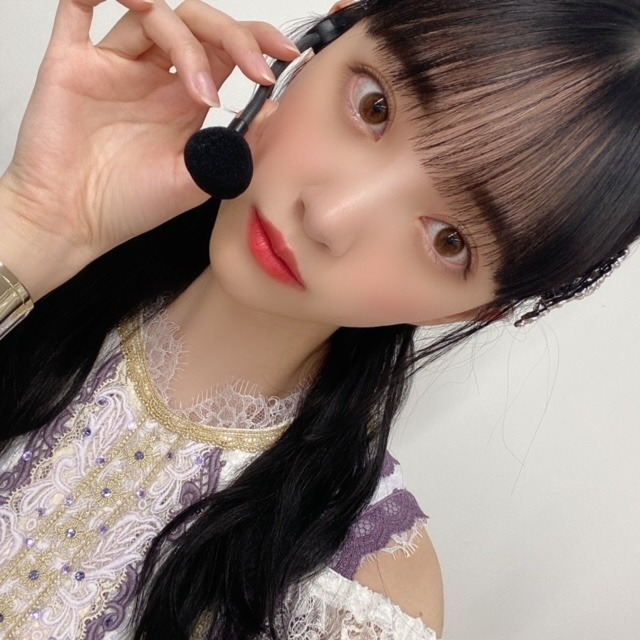

2020/1024Sat耳が冷える
この間、夢に白石さんが出てきて
一緒にカフェ行ったりお買い物したりして
楽しかったなあㅠ_ㅠ
私が卒業したらたくさん遊んでくださいって言ったらいいよって言って頭ぽんぽんしてくれて
幸せな夢すぎて、朝パッておきて
はあ、夢かあって寂しさと虚しさがすごかったです。
白石さんの笑顔が夢の中でもキラキラ輝いてて
私がすごいはしゃいであのお店も見ましょう!って
振り回してたんだけど
優しく全部一緒に回ってくれて...
夢ってたまにタイミングや内容がどんぴしゃだったりで凄い考えさせられる時もありますよね

残りの時間、大切にしたいです
人は、失ってから大切な存在に気づくことが多い愚かな生き物だけど、だからこそ意識して"今"を大切にできる人になりたいな

カメラ機能を鏡がわりによくするのですが
気付いたら何枚か撮れてたシリーズ
CDTV LIVE LIVEもよろしくお願いします！
今日もがんばろう〜〜
では
2020/10/24 12:36


コメント(307)
今年、コロナの影響でいつもと違うハロウィンに
なりそうだよね。
２分前の更新でした・・（笑） 凄いっしょ（笑）
アラビアンナイト・・・？
なんだろ？ 異国情緒な感じな頭の飾り・・・
ねじりハーフツイン？・・じゃないよね（笑）
これから就寝かな？
デハデハ おやすみ・お・な（笑）
あっ一つ言い忘れました・・カワイイぞ
とても感動的なライブでしたよ。
メンバー皆の白石さんに対する感謝、愛が溢れたものでした。
これからは未央奈さん達が、乃木坂を更に大きくしていって欲しいですね。
(^.^)
CRYSTALより。
今日、全日本大学駅伝入るよ
愛知・熱田神宮ー三重・伊勢神宮106.8km
・『ミセスダウト』を観たよ_(:3 」∠)_(未央奈：観る作品が変わってるでしょ！←)
小さい頃に、よく観てたから改めて見なおしたくなったんだよ(^^)
離婚した家族の元に、特殊メイクで老婦人に変装し、家政婦として元家族の家に転がり込むコメディ作品かな！
この作品もロビンウィリアムズ主演で、007の四代目ボンド役になる前？の、ピアース・ブロスナンが出てる(^^)
ロビンウィリアムズの小さい頃よく観た作品だと、これと『フラバー』かな！懐かしい( ͡° ͜ʖ ͡°)
・昨日久々にココイチに行ったよ(^^)デザートを頼んだりご飯の量を多めにしたから高かったけど、美味しかったー幸せ♡
・がんばみおなー
♡みおちかわいい♡
白石さんご卒業。
なおかつ乃木坂もすぐに10周年。
新しい乃木坂時代が始まりますね⸜( •⌄• )⸝
二期生好きのあたしは、
みおなさんに、もう暴れてほしい
最近バースデーライブのブルーレイ。。
全部揃い、毎日毎日みています。
はなから二期生曲やアンダー曲が大好きなんですが、
もうね 最高すぎる! 特に5th 7th なんか
釘付けになってしまうよ(ﾉｼ 'ω')ﾉｼ ﾊﾞﾝﾊﾞﾝ
それは、みおなさんが完璧なんだもの
可愛いし表情や振りが かっちょいいし
曲最後のキメなんか倒れそうになります
やはり はじめに楽曲あり
しては 乃木坂ライブ最高ですね
ただ それが言いたくて
じゃあね。
あ。
「美」にこだわっていらっしゃる
なおかつ写真もすごく綺麗し。。
例えば「美st」「美人百花」とかの
表紙になればいいのになって思います。
さらに。←(長くなりそう?)
女優の夢はなくさないで、
おとなしい方だから
これからは周囲に
背中ドンドン推します(´･_･`)←(痛そう)
( ・ิω・ิ)ん?
大事な事書き忘れました。
それで衣装着ての
立ち姿が美しいのです
←もっと書きなさい
(^^)はい
遅ればせながら、白石さんの卒業配信コンサート、お疲れ様でした(o^^o)
寂しさ、切なさを感じつつも、白石さんの乃木坂愛、そしてメンバーの白石さん愛を感じられる物凄く素敵なライブでした(*´ー｀*)
何より乃木坂のライブはやっぱり最高に楽しいです(o^^o)♩
また同じ空間で早く観たいなぁ( ´ ▽ ` )
バレッタのとき、堀ちゃんの隣に白石さんが来てまだ前を向いているとき、堀ちゃんが白石さんを見つめている時の表情がとても印象的でした(^^)
大好きな先輩を見つめる愛しさ、隣にいることの嬉しさ、そんな想いを感じさせる柔らかい笑顔( ´ ー ` )
ちょっぴり切なさも入り混じったような雰囲気もあり色んな想いが伝わってくる、なんとも筆舌に尽くしがたいほどに素敵な堀ちゃんの表情でした(o^^o)
バレッタを白石さんと2期生が踊っている光景は、一生目に焼き付けておきたい名シーンです(*´ー｀*)
白石さんは卒業されてしまいましたが、乃木坂にとって大きな存在であることはこれからも変わらないと思います(^^)
白石さんが愛した乃木坂、そしてこれからも愛していく乃木坂、僕たちも白石さんと一緒にこれからの乃木坂をまた応援していきますね(o^^o)笑
話は変わりますが昨日はハロウィンでしたね( ´ ▽ ` )
堀ちゃんからモバメを貰ったおかげで、僕の晩ごはんは迷うことなくカボチャスープになりました(o^^o)
基本的に堀ちゃんから発された言葉でその後の行動が変わる、めちゃくちゃ堀ちゃんに影響を受けやすいタイプです( ´ ▽ ` )笑
また思い立った言葉をドンドン送ってきてください、僕の迷いが消えるかもしれません(^^)笑
もう11月になりましたね〜、10月も終わっちゃいました( ´ ▽ ` )
リハーサルやライブなどもあり大変だったと思います、いったんすこし落ち着いたりするでしょうか？
年末もお忙しくなるでしょうし、少しでも休める期間になったらいいなぁ(^^)
そして755で言われていた、来年こそは2期生ライブ、堀ちゃんが言葉に出し続けてくれるのが何より嬉しい(o^^o)♩
いつまででも待てます、必ず実現しますように(*´ー｀*)
では！またコメントさせてください〜( ´ ▽ ` )
昨日も白くて小さく可愛いロールパンを食ったよ～
♡
素敵な夢ですね✨きっと現実も変わらないくらい素敵な関係なのだろうなーと思います✨
ブログと全く関係ありませんが、最近未央奈さんが歌うPlacebo(米津玄師さん+RADWIMPS野田さん)を妄想しています
未央奈さんと蘭世さんのユニットで、未央奈さんが優しい声の野田さんパート、蘭世さんは力強い米津さんパートのイメージです。
リズミカルなダンスに煌びやかな照明演出、2人の歌い方をイメージしたりと妄想が膨らみます✨権利関係で難しいだろうけどいつか聴けたらなぁなんて…
曲もコラボ曲なので中々披露する機会の少ない楽曲なので、曲を広めることにもなるので2期生ライブでなんていかがでしょうか…
かなちゃん、まいやんが卒業されましたね（；＿；）
まいやんの卒コン観てたよー
感動したし笑顔にもなれた素敵なライブでした(*´꒳`*)
お二人ともご卒業おめでとうございます！
これから先の道も幸せに溢れたものでありますように･:*+.\(( °ω° ))/.:+
卒業コンサートお疲れさまでした
おかげで最高の卒業セレモニーを
大好きなまいやんにプレゼントすることが
できたのではないかと思います
まいやん、卒業しちゃったね...
お見立て会の頃から、
乃木坂を応援してきて約9年間
本当に本当にいろんなことがありました
それは乃木坂メンバー内でのこともあるし、
自分が乃木坂を通してファン活動をしていく中でも様々な出来事や出会いがありました
長かった...？短かった...？
自分でもよくわかりません
乃木坂でまいやんを見つけてから
本当に毎日が楽しくて、
夢中で乃木坂を応援してきました
自分の青春はまいやんと共にありました
今更、まいやんの魅力を語るつもりは
ありませんが、乃木坂に一つの色をつけて
くれたことは間違いないと思ってます
まいやんが卒業したら...
自分も乃木坂ファンを卒業するつもりでした
でも、もうちょっと見ていたい
自分の中でいつの間にかそう思えるグループ
になっていました
まいやんがいなくなった乃木坂
でも、しっかりとその遺伝子は受け継がれてます
もう少し応援してもいいですか？
今日仕事休み
11.3嵐の結成記念日
来年22周年
僕も来年で22歳！
部屋綺麗にしてるんだねぇ～
統一感がある。白とクリスタル（ガラス）の清涼感
シンプルに壁から出ている飾り棚、金具が無いのが
オシャレ。
クリスマスリースになるのかか？
白いドライフラワーＯＲ造花？
その下には生花も飾ってあるんだぁ～ 白いバラ？
飾ってある絵は誰の作品ですか？ 印象派かなぁ～
額縁に時計の針・・黒がアクセントカラーになって
引き締まったシンプルモダンになってる。
・・・インテリア関係は多少なり仕事で関わって
いるんですねぇ～ そんなに深くはないけどね（笑笑）
未央奈のオデコ好きです。
広さや顔のバランスに肌の張り・・絶妙の類です。
それでは、今日午後からも未央奈にとって楽しい１日
でありますように・・・
本来東京ドーム開催だったものが、コロナ禍のために配信ライブになってしまったけど、より多くのファンがリアルタイムに観れたことはそれはそれで良かったと思う。
まぁトラブルで開始が遅れたのはちょっと痛かったけどね。高校生メンバーは最後まで居れなくなっちゃったもんね。
配信ライブならではの演出、プロジェクションマッピングとかを使ったのかな？
とてもよかったし、事前に録音したコールを入れたりして観客がいるように見せるのはリアルなライブのように感じられてよかった。でも「逃げ水」のサビ前の「月の光」のとこはライブだとファンがほぼ自分の推しメンを叫んでるだけで「動物園」って言われてる(笑)んだけど、今回はライブで初めて静かな「月の光」が聴けたなぁ(笑)
まいやんの卒業ライブだけど、2〜4期の代表曲をまいやんがいっしょに歌ったりして、なんか乃木坂46の転換期を表しているかのようで、最後はしみじみとしちゃったな。
でも、これからの乃木坂46も楽しみにしてるよ。
・『荒野の誓い』を観たよ_(┐「ε:)_
クリスチャンベイルが退役間近の軍人を演じていて、上司の命令で騎兵隊の部隊を率いて、道中で出会う家族を失った未亡人、死期が近い浅からぬ因縁のあるインディアンの首長とその家族を引き連れ、首長達を目的地まで運ぶロードムービーかな。
人が命を落とすシーンが多かったり、人種差別シーンがあったりと重い内容ではあったかな。ティモシーシャラメファンには納得いかない部分はあるだろうけど(^^;)興味があれば観てねー
・今回で洋画は、レンタル動画を含め、2020年は40本目！年末までに50本は行きたいけどƪ(˘⌣˘)ʃ
・おやすみおなー
高校生クイズで新曲披露したんだね～♪
聴きたかったなぁ～
これから聴けるの楽しみにしてるね♪
新しい制服姿も可愛い～❤️
全身見れるの楽しみにしてるね♪
私も未央奈達を見てると幸せな気持ちになれるよ！！
いつもありがとう☺️大好き❤️
れんたんセンターなんだね！！
後ろの方は誰！？ （笑笑）
高校生クイズいよいよなんだね！
今年も開催出来て、しかもまた乃木坂がサポーターで良かった！( ・∇・)
新曲はれんたんセンターみたいだね！未央奈が密かに１番期待してるのもあって嬉しいね☆
まいやんやかなりんという大きい存在の1期生が少なくなっちゃったからこれからは1、2期生が引っ張りつつも3、4期生が続いてみんなで頑張ってほしいな！(゜▽゜*)
新しい制服の色合いやデザインと未央奈がベストマッチだよね！
すごい似合ってて良いなって思ったよ！
写真集のドレスの未央奈を思い出したなー♪
ぜひ直接着てる姿をみたいなぁ。
未央奈のおなかすいたなーは何かいつもの感じがあって嬉しいなw(^-^;)
制限とかあまりしないでちゃんと食べるんだよー。
インスタ見ました
新制服
色合いもデザインも素敵ですね
ブログに載せて頂けたらなぁf(^_^)
朝晩、寒くなってきましたので
お身体に気をつけてくださいな
応援しています(^_^)
今夜も良い夢を見て下さいネ❤️❤️❤️ そして良い夢が正夢になりますように☆彡
じゃあ、今日も早めに休んで下さい。
未央奈さん☆、おやすみなさい❤️❤️❤️❤️❤️❤️❤️❤️❤️
遂にあの日が来たね。心の中で指折り数えて
待ってたよ。他の人から見たらただの
showroomじゃんって思うかもしれません。
showroom自体、僕は久しぶりに見るのも
ありますが、今回のやつは当選するかも
分からないのに有休入れて応募したからね。
当選のお知らせメールが届いた時
どんだけ嬉しかった事か…
ワクワクするしかないでしょう。
何を聞こうかな。アレにしようか
コレにしようか迷い中です。
ぐいぐい攻めるかもしれませんがよろしくね。
では、後ほど。
センターが今回、3期生、4期生？なんでしょ
まさに新しい乃木坂を象徴する今回の新曲だね
ドリームバイト、僕は見たよ。録画して見ました。
みおなちゃん、めっちゃ綺麗で、めっちゃかわいかったです。
宮大工を目指す和海君、就業体験がスタートしましたね。飛鳥時代からある職場でしたね。
和海君、棟梁さんから道具の手入れで、厳しい指摘を受けてしまいましたね。
副棟梁さんは、継手を２０分で完成してましたね。さすがの一言ですね。
みおなちゃん、体調に気をつけて仕事頑張ってね。
またコメントするね。
関家具って言うインテリアのお店が入ってて
そこでソフトバンクの優勝セールやってる！
未央奈ちゃんこの機会に巨人かソフトバンクの
優勝セール行ってみない？
ビックカメラは11月8日まで。
あ、これからイベントなんだね！俺は外れちゃったからなー。。ぐぬぬ(´・ω・`)
楽しんできてね！いってらしゃい～♪
MV集スペシャルトークショー見たよー
MVのいろんなエピソード聞けて楽しかったぁ
新制服もめっちゃ可愛かったし
コメントに反応してくれて嬉しかったよ
ありがとう
MV集のイベントお疲れさま☺️
参加できなくて残念。
今日は良い推しの日なんだってね！
未央奈のことだね☺️
推せて幸せです！！
カップスターの動画観たよ♪
未央奈今回も流石でした！
面白かったよ！
またね～☺️
ドリームバイトを見ました。
未央奈ちゃん可愛かったです。
大工さんのお話でした。大工さんのコーチの方が
２０分で作業を終えて木材と木材をつなげたのですね。
今日の夜に家のトイレに行こうとしたら
トイレにお父さんがいたので僕は近所の
駅のトイレまで行きました。
歩いて２分ぐらいの場所に駅があります。
・・・ポチっとな！( ・ω・)σ
・今週はキャプテンアメリカウインターソルジャーを観る予定(^^)半額だったんすよ..金、金言ってるから、周りから金の亡者とか言われ始めた今日この頃。笑
・白石さんが卒業して、プレッシャーが増える事が多いから、精神的にきつい事も多いだろうけど、無理せず未央奈のペースで前に進めば良いんじゃないかな。
・おやすみおなー
11月04日は「いい推し」の日だそうです(o^^o)
というわけで堀ちゃんにご挨拶をと思いまして…
いや、「いい推し」どころではないですが！
「いい」の2文字で片付けられるなら、いつも長々とコメントしてしまう悩みも解決してます…！
「いい」とか「最高」とか褒め言葉ではありますし、僕がそんなこと言ってもらえたらもちろん嬉しいんです(^^)
どうも伝える側だと自分の想いを乗せきれてない気がしてしまうんですよね、折角なら最大限伝えたくて( ´ 〜 ` )
というわけで今日も長くなるかもしれませんが、見つけてお時間があったら目を通してみてください( ´ ▽ ` )笑
僕の「推し」の堀ちゃん、「推し」っていう言葉も軽く超えた存在でもありますが(^^)笑
堀ちゃんは本当に僕たちファンのことを大切に想ってくれていて、それをしっかりと感じさせてくれること、本当にありがとうと伝えたいです(*´ー｀*)
ファンのことを想っている人はいると思いますが、それを伝えられている人は中々いないのかなと思います(^^)
でも堀ちゃんはブログやモバメなど、言葉の端々から想ってくれてるんだなぁと感じられて、なんだか一方通行な気がしないんです(*´▽｀*)
これがどれだけ嬉しいことか、伝わるかなぁ(o^^o)
推し始めたときは、ファンからの一方通行は当然だと思っていたんですが…堀ちゃんは違ってました(^^)
色んな媒体で毎日活動して、堀ちゃんを意識させてくれます( ´ ▽ ` )
発する言葉からも、ファンの存在を意識してくれていることが伝わってきます(^^)
「堀ちゃんのことを好きな人」に向けた言葉を、送ってくれています(o^^o)
「可愛い」「ダンスが上手い」「おもしろい」も全部堀ちゃんの魅力で、好きになった理由です(*´ー｀*)
そして「ファンを思ってくれること」、もっと好きになる理由です(o^^o)
好きにさせてくれて、そこからもっと好きにさせてくれる、愛情が深くなるっていうのは幸せなことだなぁと(^^)
本当にいつもありがとうございます(o^^o)
言葉にすると薄っぺらくなるようですが、堀ちゃんは僕の最高の推しです(*´ー｀*)
まだまだ伝えたいことはありますが、際限がないのでこの辺で…(^^;)
好きなところを思いながら書いてたら、たぶん朝まで書けちゃいます、長く書くことは得意なので( ´ ▽ ` )笑
とにかく「いい推しの日」に改めて想いを伝えたくなりましたので(^^)
これからもどうぞよろしくお願いします、ずっと推し続けます(o^^o)
ブログもまた楽しみにしてますね、白石さんの卒業コンサートなどもあり、中々記事として想いをまとめるのが難しいと思うので、焦らずゆっくりで大丈夫ですから( ´ ▽ ` )
11月になって最近めっちゃ寒いですね、風邪など気をつけてくださいね(*´-`)
僕は今年は鼻うがいを毎日やるのを試してみています(^^)
喉も鼻も弱くて毎年風邪を引いていますが、今年は喉のイガイガすら起こさないのが目標です( ´ ▽ ` )笑
堀ちゃんも健康のためにやってることあったらまた教えてもらえると嬉しいです、真似するので(o^^o)笑
では！またコメントさせてくださいー！
グミじゃなくてぜりーって事に変える・・・
がんばっていきまっしょい！
結婚してください
絶対幸せにします
よろしくお願いします
コメントする